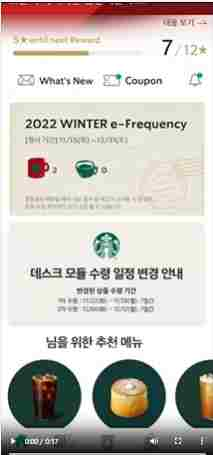

나의 활동 : 프로토타입 만들기
- 
-
스타벅스 어플의 프로토타입 제작
- ‘링큐스타트업m-비즈니스의 이해와 App 프로토타이핑’ 강의에서 3인 1조로 스타벅스 어플의 프로토타입을 제작해보았다.
- 나는 Shop, Other에 해당하는 메뉴를 만들었으며 해당 메뉴에서 주로 사용된 인터렉션은 드래그이다.
- 프로토타입을 만들며 사용자와 상호작용을 하기 위해 여러 인터렉션 요소들을 고려하는 과정에서 흥미를 가지게 되었고 직접 웹을 만들고자 웹프로그래밍기초 과목을 수강하게 되었다.